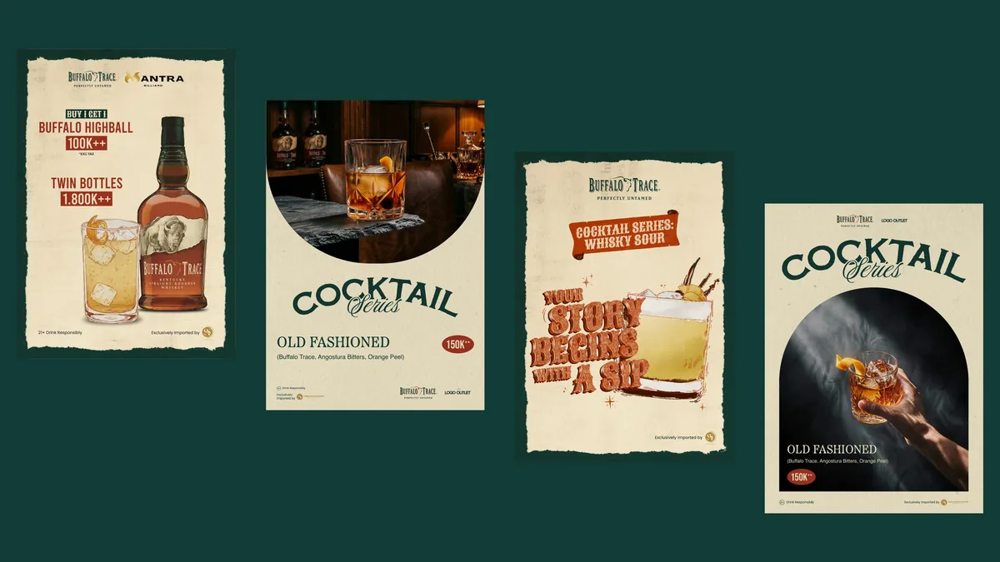
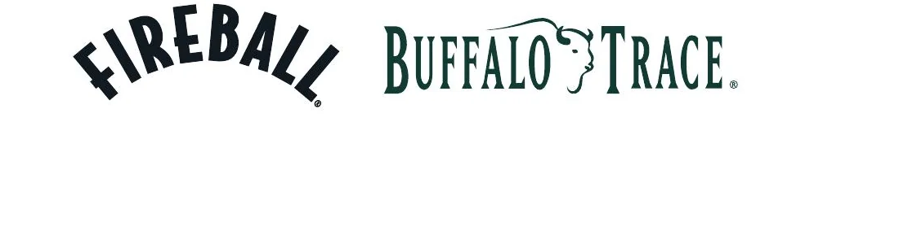
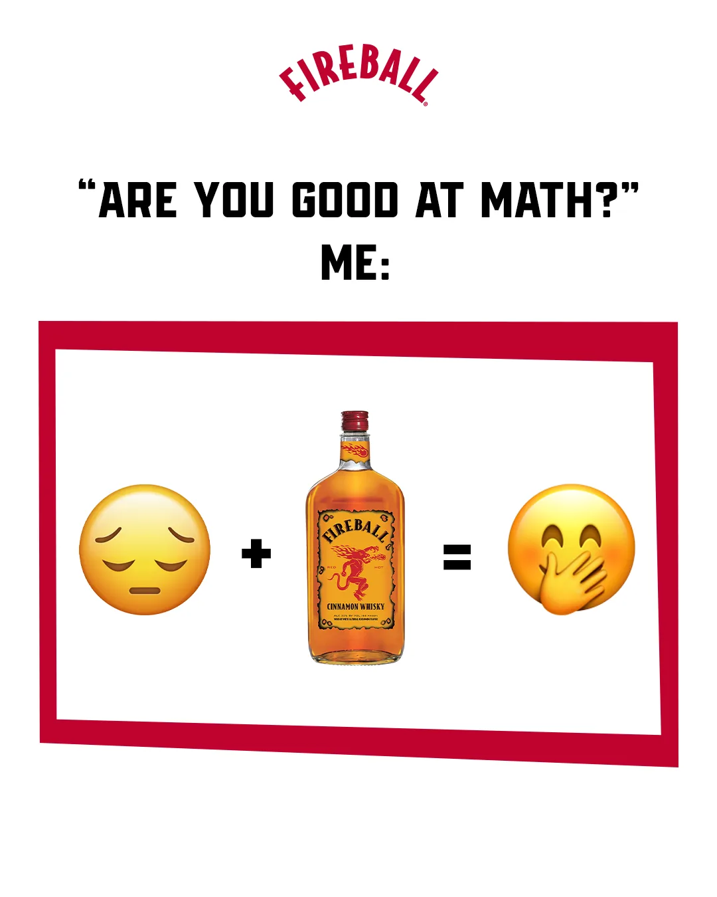
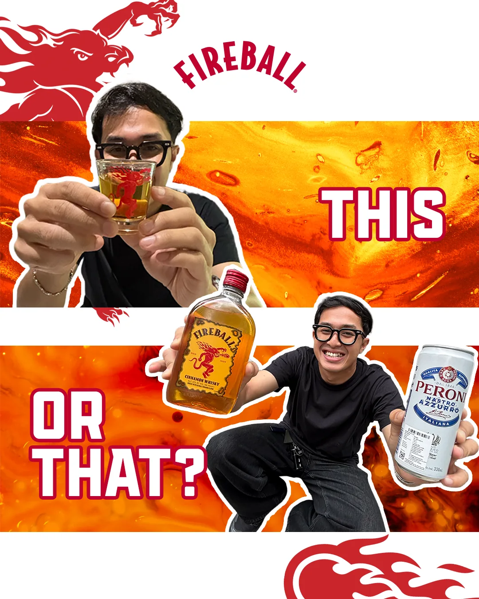
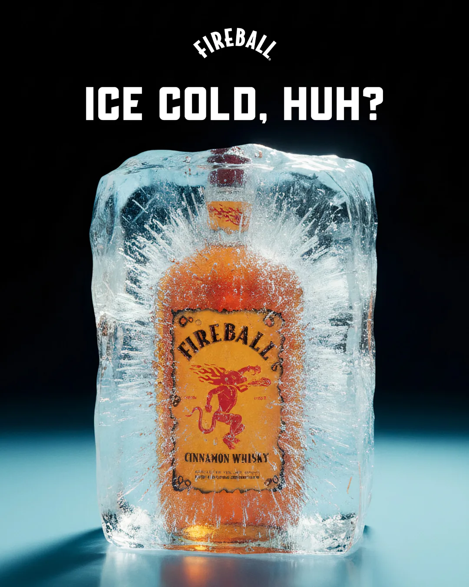
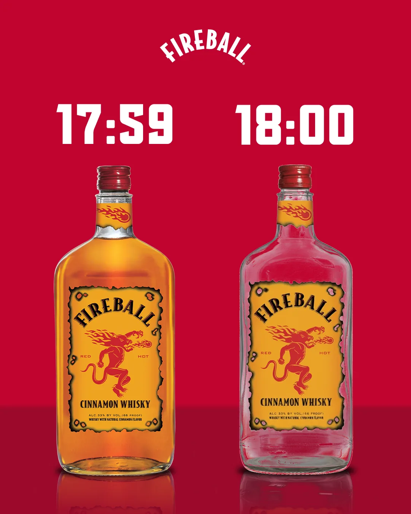
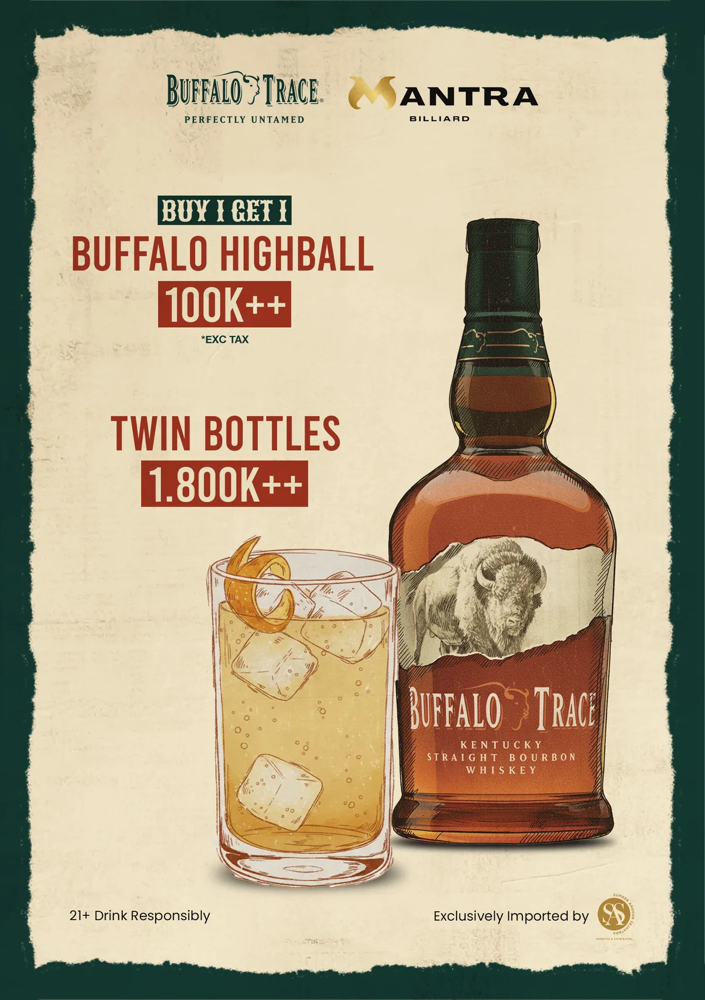
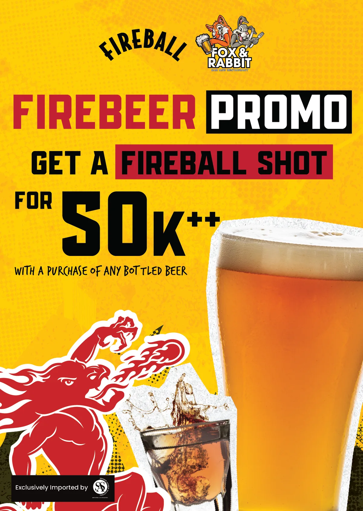
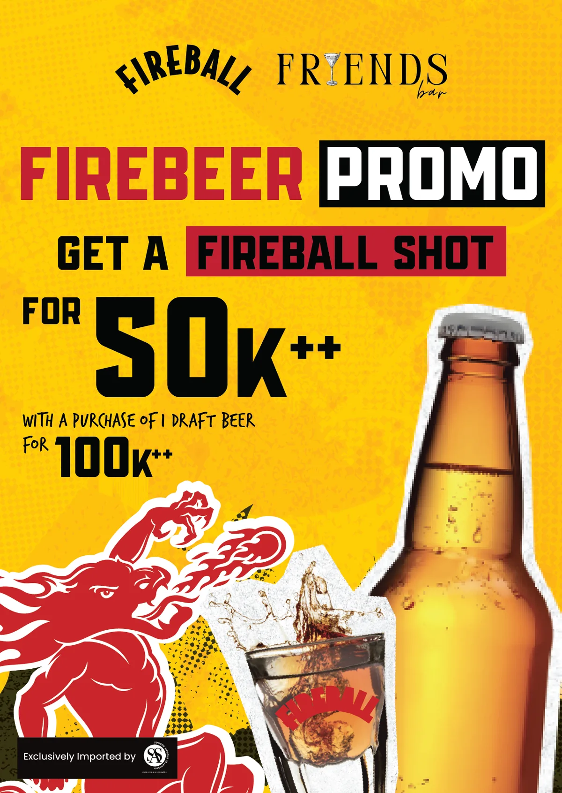

Brand activation and print materials for Fireball Whisky and Buffalo Trace under the Sazerac portfolio. Work includes Instagram feed content, wobbler POS displays, menu inserts, A5 flyers, and event activations.
The Products







